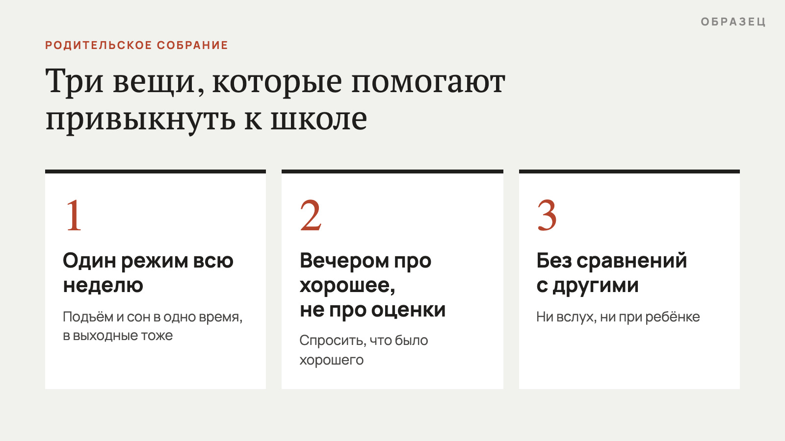
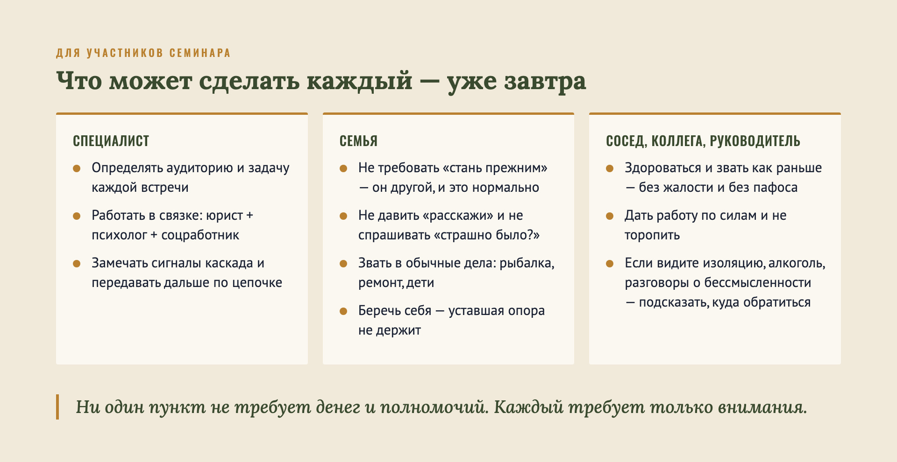
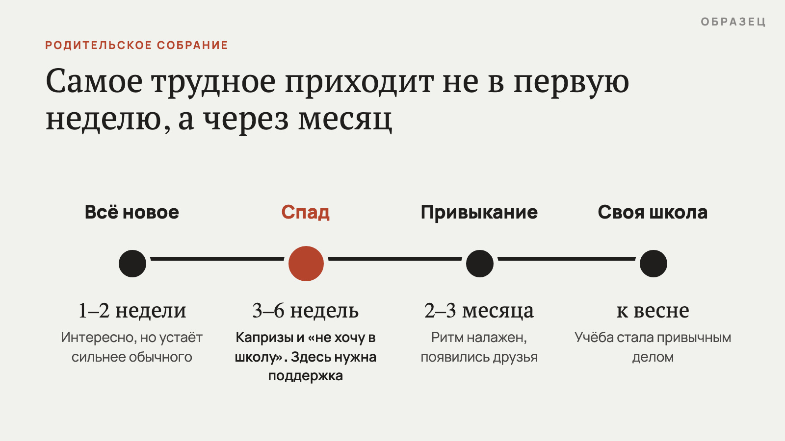
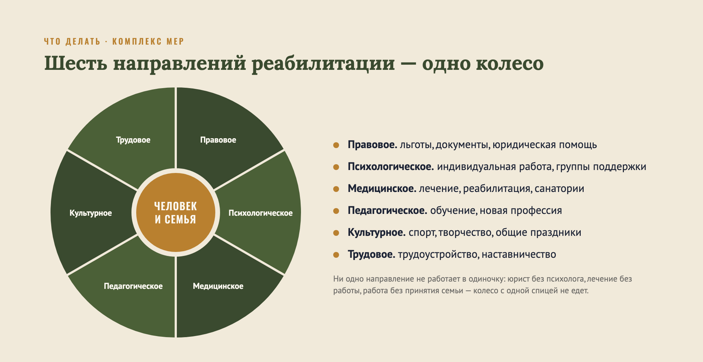
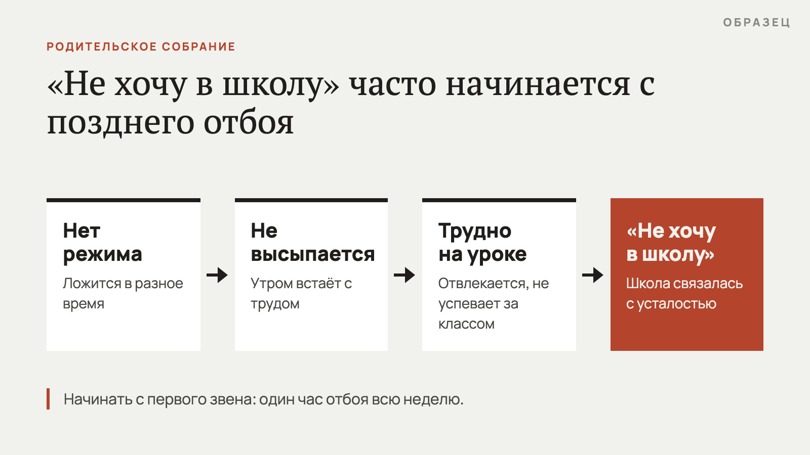
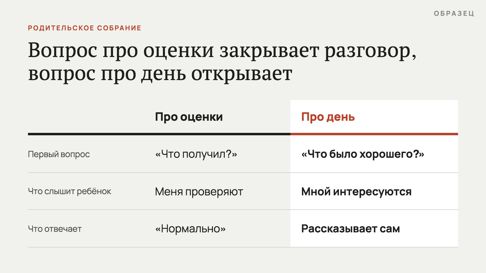
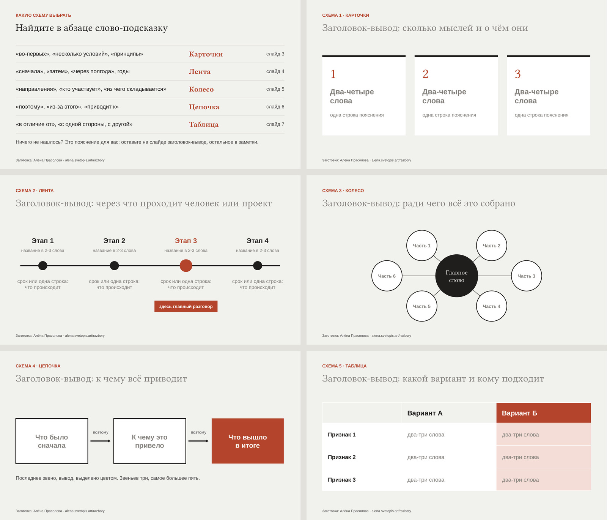

Разбор · слайды с текстом
Оформление слайдов с текстом: 5 схем, в которые превращается любой абзац
Как выбрать схему за 10 секунд и где скачать готовые.
Внутри бесплатный шаблон PowerPoint, 7 слайдовОтвет за 10 секунд
Абзац не переносят на слайд, его превращают в схему.
- Пункты равныкарточки
- Важен порядоклента
- Всё вокруг главногоколесо
- Одно вызывает другоецепочка
- Два варианта рядомтаблица
Алёна Прасолова, собираю презентации к выступлениям
17 ноября 2026 · 4 минуты чтения


«Тут всё важно, ничего не выкинешь». Так на слайд и попадает абзац. А зал, увидев абзац, начинает читать и перестаёт слушать.
Я Алёна Прасолова, собираю презентации к выступлениям для педагогов, психологов, мастеров и малого бизнеса. Ниже пять схем: две на настоящих слайдах из одного доклада, три на учебных образцах. И шаблон PowerPoint под ваш текст.
Некогда разбираться? Пришлите абзацКакую схему выбрать: попробуйте за 10 секунд
Откройте свой абзац и поищите в нём слова-подсказки. Первое найденное и есть ваша схема.
| В абзаце есть слова | Схема |
|---|---|
| «во-первых», «несколько условий», «основные принципы» | карточки |
| «сначала», «затем», «через полгода», годы | лента |
| «направления», «кто участвует», «из чего складывается» | колесо |
| «поэтому», «из-за этого», «приводит к» | цепочка |
| «в отличие от», «с одной стороны, с другой» | таблица |
Ничего не нашлось? Значит, в абзаце пояснение для вас, а не мысль для зала. Оставьте на слайде заголовок-вывод, остальное в заметки.
1Карточки: пункты равны
Список читают сверху вниз, как текст. Карточки глаз схватывает сразу: мыслей три, и они равны.
Как собрать. Из каждого пункта оставьте два-четыре слова, это название. Под ним одна строка пояснения. Карточки одного размера, на одной высоте; в PowerPoint помогает кнопка «Выровнять». Больше пяти? Делите на два слайда.

2Лента: важен порядок во времени
В абзаце этапы перемешаны с пояснениями. На ленте сразу видно, сколько их и где вы сейчас.
Как собрать. Линия через весь слайд, на ней точка на каждый этап. Над точкой название в два-три слова, под ней срок или одна строка. Этап, о котором главный разговор, выделите цветом.

3Колесо: всё вокруг одного главного
В перечне первый пункт кажется важнее последнего. В колесе части равны, и видно, ради кого они собраны.
Как собрать. В центре круг с главным словом: «Ребёнок», «Клиент», «Семья». Вокруг четыре-шесть частей, в каждой одно-два слова. Стрелки не нужны, здесь ничего не движется.

4Цепочка: одно вызывает другое
Слушатель держит в голове первое звено, пока вы говорите о третьем. На цепочке связь нарисована стрелкой, её не нужно помнить.
Как собрать. Три-пять звеньев, в каждом короткая фраза, между ними стрелки. Последнее звено, вывод, выделите цветом. Пример: «Нет режима → не высыпается → трудно на уроке».

5Таблица: сравниваете два варианта
Абзац рассказывает про варианты по очереди, и слушатель должен помнить оба. В таблице признак и два ответа стоят в одной строке.
Как собрать. Две колонки с названиями сверху, три-четыре признака слева, в клетках по два-три слова. Не влезает? Признак слишком широкий, разбейте его. Вариант, который советуете, выделите цветом колонки.

Шаблон слайдов «5 схем вместо абзаца»: скачать бесплатно

Откроется прямо на телефоне, можно листать. 7 слайдов с подсказками.
Файл .pptx, 53 КБ, для компьютера. С телефона откройте в Google Slides, на Маке в Keynote.
PDF открывается в этой же вкладке, вернуться к статье: кнопка «Назад». Если файл скачался, он в загрузках. Ничего не произошло? Откройте эту страницу в обычном браузере: меню с тремя точками, пункт «Открыть в браузере».
Без регистрации и почты.
Выберите схему на втором слайде, скопируйте нужный к себе и замените серый текст своим. В заметках к каждому слайду пример и подсказка.
Вставили текст, а схема не складывается? Пришлите абзац боту, он спросит про выступление и назовёт цену. Черновик вы увидите до оплаты.
Кейс: пять схем из одного доклада
Слайды с карточками и колесом выше из презентации, которую я собирала Анне Комарницькой, психологу и преподавателю, к XIV Международному симпозиуму медицинских антропологов в Москве, сентябрь 2026 года.
Было: реферат на 3,5 страницы сплошного текста, фото со встреч и сутки до доклада.
Стало: 17 слайдов со схемами и памятка для зала. Успели.
«У меня завтра конференция, уровень высокий, а у меня один доклад, и получилось так красиво!»
Сейчас Анна вернулась к нам уже пятый раз.
Не хотите разбираться сами
Абзацев тридцать, а выступать скоро? Пришлите текст мне. Помощник (ИИ) собирает черновик слайдов, а я проверяю каждый своими глазами и довожу до ума.
от 1 500 ₽ презентация до 10 слайдов
В MAX отвечает бот-приёмщик, в Telegram я сама.
Как это будет
- Нажимаете кнопку, открывается чат с ботом-приёмщиком.
- Бот задаёт пару вопросов про выступление и называет цену. До этого вы ничего не платите.
- Присылаете текст и получаете черновик до оплаты. Готовая презентация за 1-2 дня, в заказе редактируемый файл PowerPoint.
Пример первого сообщения
Здравствуйте! Выступаю на педсовете в пятницу, 10 минут. Текст доклада пришлю следующим сообщением.
Можно написать так или просто прислать текст.
Частые вопросы
Сколько пунктов оставить на слайде?
Три-пять. Больше обычно значит две мысли: разделите на два слайда. Слайды ничего не стоят, а внимание зала стоит.
Текст не влезает в карточки. Что делать?
Значит, в карточке объяснение, а не название. Оставьте два-четыре слова, объяснение уберите в заметки и скажите вслух.
Можно ли смешивать схемы в одной презентации?
Нужно. Пятнадцать карточек подряд утомляют так же, как пятнадцать списков. Хорошо, когда подряд не больше двух слайдов одного вида.
Вопрос вам
Какой абзац в вашей презентации никак не складывается в схему? Пришлите его боту, мне правда интересно, где пять схем не работают.